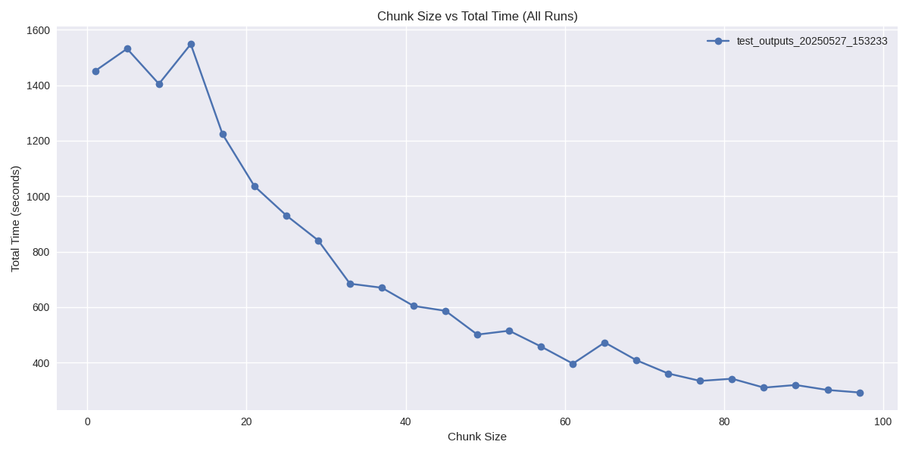
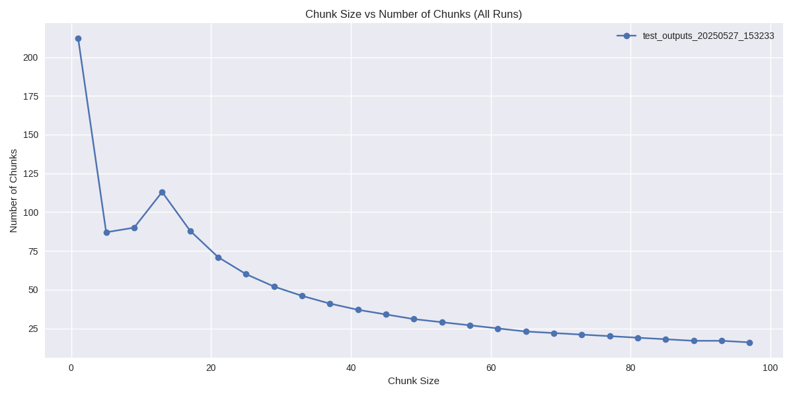
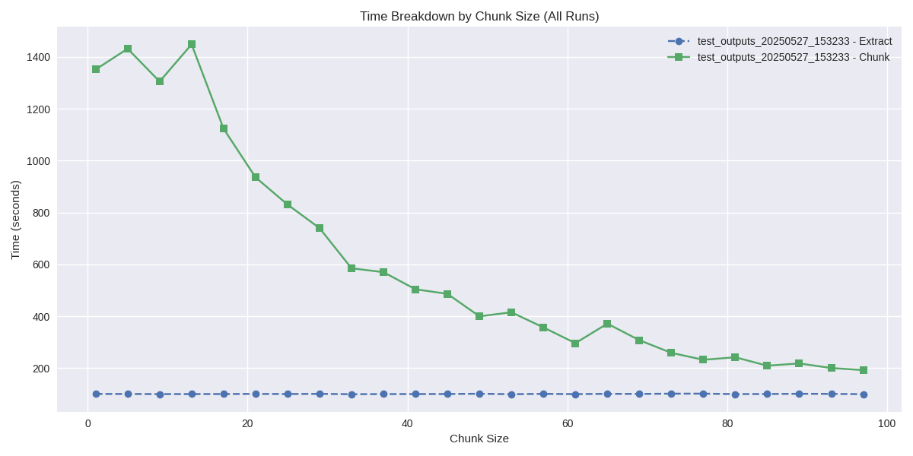
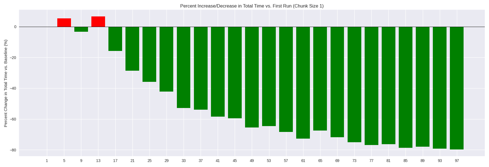

Generated on: 2025-05-28 07:35:35
Total Test Runs: 1
Total Tests: 25
Chunk Sizes Tested: 1, 5, 9, 13, 17, 21, 25, 29, 33, 37, 41, 45, 49, 53, 57, 61, 65, 69, 73, 77, 81, 85, 89, 93, 97
total_time_per_node: Normalizes total time by the number of nodes processed.
pct_diff_vs_best: Percentage difference in normalized time vs. the best (lowest) for each chunk size.
| run | chunk_size | nodes | chunks | extract_time | chunk_time | total_time | total_time_per_node | total_time_per_chunk | chunks_per_second | nodes_per_second | pct_diff_vs_baseline |
|---|---|---|---|---|---|---|---|---|---|---|---|
| test_outputs_20250527_153233 | 1 | 1490 | 212 | 100.58 | 1351.12 | 1451.70 | 0.974295 | 6.847642 | 0.156907 | 1.102789 | 0.0 |
| test_outputs_20250527_153233 | 5 | 1490 | 87 | 100.41 | 1431.22 | 1531.63 | 1.027940 | 17.604943 | 0.060787 | 1.041070 | 0.0 |
| test_outputs_20250527_153233 | 9 | 1490 | 90 | 99.98 | 1304.79 | 1404.78 | 0.942805 | 15.608667 | 0.068977 | 1.141946 | 0.0 |
| test_outputs_20250527_153233 | 13 | 1490 | 113 | 100.10 | 1448.02 | 1548.12 | 1.039007 | 13.700177 | 0.078038 | 1.028991 | 0.0 |
| test_outputs_20250527_153233 | 17 | 1490 | 88 | 100.24 | 1122.84 | 1223.07 | 0.820852 | 13.898523 | 0.078373 | 1.326992 | 0.0 |
| test_outputs_20250527_153233 | 21 | 1490 | 71 | 100.61 | 935.31 | 1035.92 | 0.695248 | 14.590423 | 0.075911 | 1.593055 | 0.0 |
| test_outputs_20250527_153233 | 25 | 1490 | 60 | 100.17 | 830.43 | 930.60 | 0.624564 | 15.510000 | 0.072252 | 1.794251 | 0.0 |
| test_outputs_20250527_153233 | 29 | 1490 | 52 | 100.92 | 739.82 | 840.73 | 0.564248 | 16.167885 | 0.070287 | 2.014003 | 0.0 |
| test_outputs_20250527_153233 | 33 | 1490 | 46 | 99.42 | 584.93 | 684.34 | 0.459289 | 14.876957 | 0.078642 | 2.547313 | 0.0 |
| test_outputs_20250527_153233 | 37 | 1490 | 41 | 100.02 | 569.84 | 669.87 | 0.449577 | 16.338293 | 0.071950 | 2.614769 | 0.0 |
| test_outputs_20250527_153233 | 41 | 1490 | 37 | 100.12 | 503.94 | 604.06 | 0.405409 | 16.325946 | 0.073421 | 2.956701 | 0.0 |
| test_outputs_20250527_153233 | 45 | 1490 | 34 | 100.30 | 486.24 | 586.54 | 0.393651 | 17.251176 | 0.069924 | 3.064330 | 0.0 |
| test_outputs_20250527_153233 | 49 | 1490 | 31 | 101.20 | 399.70 | 500.90 | 0.336174 | 16.158065 | 0.077558 | 3.727796 | 0.0 |
| test_outputs_20250527_153233 | 53 | 1490 | 29 | 99.59 | 415.20 | 514.78 | 0.345490 | 17.751034 | 0.069846 | 3.588632 | 0.0 |
| test_outputs_20250527_153233 | 57 | 1490 | 27 | 100.83 | 356.94 | 457.77 | 0.307228 | 16.954444 | 0.075643 | 4.174371 | 0.0 |
| test_outputs_20250527_153233 | 61 | 1490 | 25 | 99.90 | 296.20 | 396.10 | 0.265839 | 15.844000 | 0.084402 | 5.030385 | 0.0 |
| test_outputs_20250527_153233 | 65 | 1490 | 23 | 100.99 | 371.45 | 472.44 | 0.317074 | 20.540870 | 0.061920 | 4.011307 | 0.0 |
| test_outputs_20250527_153233 | 69 | 1490 | 22 | 100.54 | 307.68 | 408.22 | 0.273973 | 18.555455 | 0.071503 | 4.842694 | 0.0 |
| test_outputs_20250527_153233 | 73 | 1490 | 21 | 101.55 | 258.83 | 360.38 | 0.241866 | 17.160952 | 0.081134 | 5.756674 | 0.0 |
| test_outputs_20250527_153233 | 77 | 1490 | 20 | 101.64 | 232.21 | 333.85 | 0.224060 | 16.692500 | 0.086129 | 6.416606 | 0.0 |
| test_outputs_20250527_153233 | 81 | 1490 | 19 | 99.85 | 241.85 | 341.71 | 0.229336 | 17.984737 | 0.078561 | 6.160843 | 0.0 |
| test_outputs_20250527_153233 | 85 | 1490 | 18 | 100.30 | 209.36 | 309.66 | 0.207826 | 17.203333 | 0.085976 | 7.116928 | 0.0 |
| test_outputs_20250527_153233 | 89 | 1490 | 17 | 101.11 | 218.07 | 319.17 | 0.214208 | 18.774706 | 0.077957 | 6.832668 | 0.0 |
| test_outputs_20250527_153233 | 93 | 1490 | 17 | 100.70 | 200.41 | 301.11 | 0.202087 | 17.712353 | 0.084826 | 7.434759 | 0.0 |
| test_outputs_20250527_153233 | 97 | 1490 | 16 | 99.71 | 192.39 | 292.10 | 0.196040 | 18.256250 | 0.083164 | 7.744685 | 0.0 |
This plot shows how the total processing time varies with different chunk sizes across all test runs.
This plot shows the relationship between chunk size and the resulting number of chunks.
This plot breaks down the time spent on extraction vs. chunking for different chunk sizes.
This plot displays the percent increase or decrease in total_time for every test/run compared to the first run with chunk size 1 as the baseline. Negative values (green) are faster than the baseline; positive values (red) are slower.
